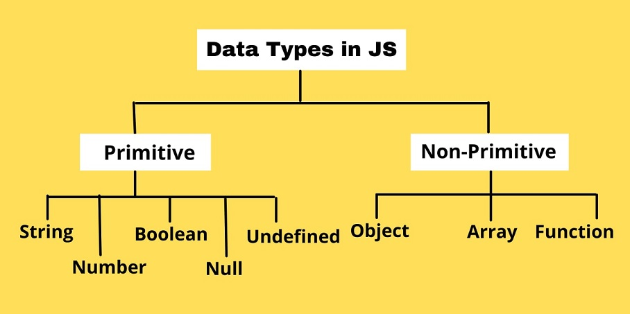

introduction Of Java Script
What is javaScript?
- JS stands for java Script.
- JavaScript was designed to add interactivity to HTML pages.
- JavaScript is a scripting language. A scripting language is a lightweight programming language.
- JavaScript is usually embedded directly into HTML pages.
- JavaScript is an interpreted language (means that scripts execute without preliminary compilation).
- Everyone can use JavaScript without purchasing a license.
Exmaple:

History of JS?
Javascript was created by Brendon Eich in 1995 for Netscape Navigator, and he created the language in just 10
days.
Initially it was called Mocha and then changed to LiveScript and then finally to JavaScript.
it was done to attract Java developers, However Javascript has almost nothing to do with java.
Why use JS?
webapge used to static before java script.
java Sceript is used to creating a dynamic website.
Client side logic is enabled.
How to save a JS file?
The style definitions are normally saved in external .js files.
JS Syntax
.png)
JS Data Type

JS Comments
JS comments are not displayed in the browser, but they can help document your source code.
A JS comment is placed inside the script element, and starts with
// this is comment: